Decreasing Universe Theory: The Tully-Fisher Relation
Joao Carlos Holland de Barcellos, São Paulo, Brazil
Abstract: Starting from the 'Decreasing Universe Theory' (DUT), particularly from the formula that explains the dark matter illusion [04], we will derive the Tully-Fisher relation [01] for spiral galaxies.
Keywords: Tully-Fisher, Dark Energy, Hubble's Law, Decreasing Universe Theory, Universe Expansion, Dark Matter
The "Decreasing Universe Theory" starts from the premise that the gravitational field causes space and everything contained within it to continuously shrink. In places where the gravitational field is zero, no shrinkage occurs.
From this premise, we
have already reached the following
results:
1. We derived Hubble's
Law [02] (without requiring dark energy)
2. We derived a simple
formula for the distance of a galaxy as a function of its redshift (when the galaxy is
similar to via-lactea) [03]
3. We derived the
rotation curve of galaxy Messier 33: We explained why dark
matter is an illusion and
how the stellar
rotation curve in the galaxy can be
obtained without invoking such an
entity [04]
4. We deduced (without
postulating), that the speed of
light is invariant for references that are contracting due to the gravitational
field and those that are not [05]
5.
We derived
the "Cosmological
Time Dilation" and
showed how this can be
applied to the explosion time of SN1A-type Supernovae, which grows by
the factor (Z+1) [05]
In this
article we will derive the Tully-Fisher relation.
The Tully–Fisher relation [01] is an empirical law of astrophysics connecting two observables in spiral galaxies:
- how fast they spin
- how bright (or massive) they are
M ∝ V⁴ [F00]
Tully-Fisher Relation
Where:
M = Mass or luminosity (brightness of the galaxy)
V = rotation velocity
Tully-Fisher establishes that the mass of a spiral galaxy is proportional to the fourth power of its velocity (the velocity of the stars at the outermost orbits).
We will now derive the so-called 'Tully-Fisher Relation' (TFR) from the DUT.
To arrive at the TFR, we will use some formulas and concepts established in previous articles [06].
First, let us recall the main formulas and results obtained.
The main formula is the one relating the measured contraction of space (and everything contained within it) to the measurement obtained by a reference frame that does not contract, and vice versa.
Thus, the distance measure
(L) of sidereal space (which does not contract), observed by a reference
frame that is contracting, is given by [02][04]:
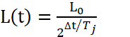
(Contraction formula from the point of view of a non-shrinking observer)
Where:
L(t) = Measure
of L₀ (decreasing) by a "Sidereal Observer".
t₀ = Initial
time (arbitrary)
L₀ = Length
measured at t=t₀
Tj = Jocaxian Time (Time to shrink to
half)
Δt
= t – t₀
Rewriting and using the Jocaxian Factor (Fj):
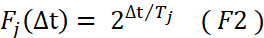
Jocaxian’s Factor
Or, alternatively:
: 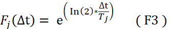
Thus
(F1): 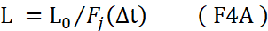
If the object or distance being measured is in the non-contracting reference frame, the opposite occurs: from Earth (which is contracting), we will see the object (or distance) increase in size, not decrease:
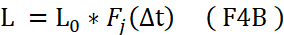
From our original article [02], we associated the
'Jocaxian Factor' with the Hubble constant:
D(∆t) =
D0 * Fj(∆t) ( F5 )
(Distance Formula with
the Jocaxian Factor)
Where:
"t₀" is the time at
which the photon was emitted
by the galaxy.
"t" is the time at
which Earth received this photon.
"D₀" is the distance
we would measure from Earth to the galaxy
at time "t₀".
"D(Δt)" is the
distance measured from Earth to a galaxy after "Δt" time.
"Δt" = t-t₀ (Time period)
Differentiating with respect to 'T' we have:
V = d[ D(∆t) ] /dt ( F6A )
V = ( ln(2) / Tj )
* D(∆t) ( F6B )
(Distant galaxies’ apparent distance
speed formula.)
But Hubble's
Law is:
V = H0 * D ( F7 )
(Hubble’s Law)
Where H0 = Hubble’s Constant
D = Distance from the galaxy)
Therefore:
H0 = ( ln(2)
/ Tj ) ( F8 )
Hubble Constant in terms of
Jocaxian time
We define the Jocaxian factor [04] as:
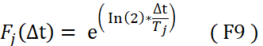
Or in terms of the
Hubble constant:
Fj(∆t)
= exp( H0*∆t) ( F10 )
(Jocaxian
Factor in terms of the Hubble constant)
To adapt the formula for use in another galaxy (or another location) with a different gravitational field from where we are — that is, to adapt formula [F10] for a reference frame with gravitational field 'g' (different from our position in the Milky Way = 'gt') — we made an additional hypothesis:
"The contraction time is inversely proportional to the intensity of the gravitational field." [04]
Thus, for the contraction time to halve:
Tj(g) = Tj⋅ (F11)
Where:
Tj=Jocaxian Time (Time to
Length contract to half)
gt=GMt/Rt2 (gravitational field at Earth (Milk Way) ).
g =GM/R2 (gravitational field at
distance R from galactic center).
This leads us to the generalized Jocaxian Factor:
Fj(Δt,M,R) = 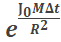
Where:
= 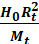
(Jocax Constant ≈ 1,37E-18
m²·s⁻¹·kg⁻¹).
Where
H0=Hubble Constant (≈2,2E-18 s-1)
Rt = Distance from Earth to center of Milk Way (≈2,5E20 m)
Mt= Mass of Milk Way (≈1E41 Kg)
Where:
H₀ = Hubble Constant
(≈2.2E-18 s⁻¹)
Rt = Distance from Earth to center of Milky
Way (≈2.5E20 m)
Mt
= Mass of Milky Way (≈1E41
kg)
With this new hypothesis, we were able to write [F4A] in generic form. Thus, the measurement observed in the non-contracting (comoving) reference frame of something contracting in an arbitrary field 'g' is:
L(t) = L0/Fj(M,R,T) [F14]
comoving measurement
in a field 'g' different from Earth's (gt)
Let us
now recall the derivation of the
Dark Matter equation [04]
to understand the process:
To understand what happens to the
photon until it reaches Earth, we must consider that:
a) Both the galaxy where
the photon originated and the Milky Way have
been contracting since their formation.
We will assume both began contracting
simultaneously at instant T₀. (We will treat T₀ as the time from galaxy
formation to the present: approximately
13 billion years = 4E16 s).
b) The contraction rate, as we have seen, depends
on the mass
of the galaxy
and therefore can vary between
galaxies. The generalized Jocaxian Factor [F12] accounts
for these differences.
c) It is important to
note, as seen previously, that the contraction
rate of the star emitting the photon
depends on its distance (R) from the galactic center. Thus, the redshift
of the emitted
photon (considering only this factor)
will be greater
the farther the star is from
the galactic center.
d) Obviously,
part of the
redshift is due to the
rotation velocity of the star, which
is greater the closer the
star is to the center.
e) This difference in the outgoing redshift, as a function of distance from the galactic center, will define the "dark matter effect" and its peculiar curve.
f) Consider
that T₁ is the instant when
the photon is emitted from
the source galaxy toward Earth. When it leaves the source
galaxy, it stops contracting, since the galaxy's gravitational
field becomes negligible.
g) We
will calculate the apparent velocity
of the star (as a function of its distance from the
center), considering the redshift until it leaves the galaxy.
(We will not consider the
'dark energy' effect, which is
the contraction of our galaxy
after the photon leaves the
emitting galaxy until it arrives at Earth).
For simplicity,
let us assume that the galaxies
formed at the same time. In that case, photons began contracting differently in each galaxy with different
masses.
The total redshift
is the change
in wavelength relative to a standard on Earth.
Initially,
shortly after their formation, both the emitting
galaxy and the receiving galaxy
(the Milky Way) emitted photons at the same
wavelength (=λ₀).
After about 13 billion years (=T₀), the contraction rates differed, and therefore the
wavelength decreased differently for both galaxies.
In the Milky Way, the photon after T₀ will have a shorter wavelength:
λT0 = λ0/FTJ(T0) = λ0/exp(H0T0) [F15]
Where:
λ₀ = Wavelength
at beginning
λ(T₀) = Wavelength of photon
on Earth after T₀
FTJ = Jocaxian
Factor on Earth
T₀
= Time from beginning of Galaxy until Now (13G Years)
In the emitting galaxy, the contraction rate is different, so we need to use the general formula [F14]:
λM0 = λ0/Fj(T0,M,R) [F16]
Where:
λ(M₀) = Wavelength of photon
in another galaxy after T₀
Fj(T₀,
M, R) = Generalized Jocaxian
Factor
M
= Mass of Galaxy
R
= Distance of star to center of galaxy
However, the star emitting the photon will have a redshift that depends on its rotation velocity:
V = SQRT(MG/R) [F17]
Recalling that:
V = cz [F18]
Where: c = Speed of light
z = redshift
z = V/c = (λ(M₁) / λ(M₀) - 1) [F19]
Where:
λ(M₁) = Wavelength
of photon with galaxy rotation
velocity
From [F17][F18][F19] we derive:
λ(M₁) = λ(M₀) (SQRT(MG/R)/c + 1) [F20]
The final redshift relative
to the Milky
Way will be:
Zf = (λ(M₁) - λ(T₀)) / λ(T₀) [F21]
Thus:
Zf = (λ(M₀) (SQRT(MG/R)/c + 1)) / λ(T₀) - 1 [F22]
Substituting [F15] and
[F16]:
Zf = (exp(H₀T₀) / Fj(T₀,M,R)) (SQRT(MG/R)/c + 1) - 1 [F23]
But
v = cz, then the speed measured
on Earth (without considering the effect of 'dark
energy' = our contraction during the photon's journey)
will be:
V
= c { (exp(H₀T₀) / Fj(T₀,M,R)) (SQRT(MG/R)/c + 1) - 1 } [F24]
Substituting Fj(T₀,M,R), we obtain the dark matter equation — the apparent rotation curve of the galaxy:
V=c ( 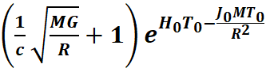
Galaxy Rotation Curve ('Dark Matter Equation')
Where:
C = Speed of Light (3E8 m/s)
M = Mass of the Emitting Galaxy (1.4E40 kg)
G = Gravitational Constant (6.7E-11)
R = Distance from the Star to the center of the galaxy
H₀ = Hubble Constant (2.2E-18)
T₀ = Contraction Time (13 billion years = 4E16s)
J₀ = Jocax Constant (1.37E-18)
For spiral galaxies dominated by baryonic disks, the observed luminous distribution is frequently used as a direct tracer of the stellar surface density, especially when one assumes an approximately constant mass-to-light ratio ((M/L)) in red or infrared optical bands.
In this context, the stellar surface density can be written as: Σ(R) = (M/L)I(R)
where Σ(R) represents the baryonic/stellar surface density and I(R) is the surface brightness.
Thus, greater luminosity per unit area implies
a greater concentration of visible baryonic
mass. This approximation is widely employed in structural studies of spiral disks. (Aanda)
M/L ≈ Cte₁ [F26]
The Mass/Luminosity ratio is constant in spiral galaxies
Where:
M = Mass of the galaxy
L = Luminosity of the galaxy
Historically, Freeman (1970) observed
that many high-surface-brightness spiral galaxies had relatively
similar central surface brightness values, a phenomenon known as Freeman's Law
[07],
suggesting that a large fraction of these galaxies
share a relatively narrow range of central surface brightness. Although subsequent work has shown greater
scatter due to the inclusion
of low-surface-brightness galaxies, the relation remains
relevant for classical
high-brightness spirals. (OUP Academic)
L/A ≈ Cte₂ [F27]
Under the hypothesis that surface brightness approximately traces baryonic surface density, the observational similarity of central surface brightness implies that many classical spiral galaxies have relatively similar average baryonic mass densities, at least as a first-order approximation.
In other words, if surface luminosity and baryonic density are correlated, then spiral disks with similar surface brightness will also tend to show comparable average surface mass distributions.
This regularity provides an observational basis for simplified models in which spiral galaxies share similar baryonic structural properties.
Thus from [F26] and [F27] we have (for a significant subset of high-surface-brightness spirals):
ρ ≡ M/A ≈ Cte [F28]
The surface mass density for spiral galaxies are very similar
Where:
ρ = Surface mass density
M = Mass of the galaxy
A = Area of the Galaxy (πR²max)
From the dark matter equation [F25] and under the simplifying hypotheses [F26] and [F27], we can derive the Tully-Fisher relation.
We know that for a spiral galaxy, the mass is
inscribed approximately in
a circle, and therefore this mass must be proportional
to the area
of that circle:
M = ρ · π · R²
[F29]
The mass of a spiral galaxy is proportional to its area
Where:
M = Mass of the galaxy
ρ = Average
surface mass density
R
= Radius of the galaxy
The Milky Way is a spiral galaxy, so we can
write:
Mv = ρv · π · Rv2 [F30]
Mass as a function of radius for the Milky Way
We can now rewrite the Jocaxian constant (J₀) [F13] as a function of surface density [F30]:
= = 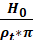
J₀ as a function of
mass density for flat galaxies
Where:
J₀ = Jocaxian
constant
H₀ = Hubble Constant
ρt
= Average surface mass density of the
Milky Way
We can rewrite equation [F25] in terms of surface mass densities:
V=c ( 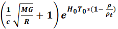
Rotation curve as a function of surface mass density
We can use [F28] and write:
ρ ≈ ρt [F33]
Using [F33], equation [F32] becomes:
V=c ( 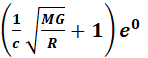
Using [F29]:
V= 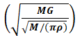 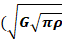
And finally:
M ∝ V⁴ [F36]
Tully-Fisher relation
In this article, we derived the Tully-Fisher relation (M ∝ V⁴) from the principles of the Decreasing Universe Theory (DUT), without invoking dark matter or any exotic componente.
.
The derivation relied on three ingredients: the DUT's galaxy rotation curve equation [F25], which emerges from the premise that gravitational fields cause space and matter to contract; and two well-established astrophysical approximations for spiral galaxies — the near-constant mass-to-light ratio [F26] and Freeman's Law of approximately uniform central surface brightness [F27].
Together, these lead naturally to a constant surface mass density across spiral galaxies [F28], which is the key step that unlocks the Tully-Fisher scaling.
This result adds to a growing list of empirical laws and observations that the DUT can reproduce from first principles — including Hubble's Law, galactic rotation curves, cosmological redshift distances, the invariance of the speed of light between contracting and non-contracting frames, and cosmological time dilation in SN1A supernovae.
The fact that a single contracting-universe premise (making it compatible with Occam's razor) can account for phenomena typically attributed to dark matter, dark energy, and relativistic effects suggests that the DUT deserves further theoretical development and observational scrutiny.
[01] Tully–Fisher relation
https://en.wikipedia.org/wiki/Tully%E2%80%93Fisher_relation
[02] Derivation of Hubble’s Law and its relation to dark energy and dark matter
https://medcraveonline.com/OAJMTP/OAJMTP-02-00049.pdf
[03] Decreasing universe: the distance as a function of redshift
https://medcraveonline.com/AAOAJ/AAOAJ-09-00220.pdf
[04] Decreasing Universe: The ‘Dark Matter’ Effect
https://www.wecmelive.com/open-access/decreasing-universe-the-dark-matter-effect.pdf
[05] Decreasing Universe Theory: Cosmological Time Dilation and the SN1A Explosion
https://vixra.org/abs/2604.0064
[06] Main
DUT articles
https://jocaxx.github.io/DUniverse/Articles.pdf
[07] Freeman law
https://en.wikipedia.org/wiki/Freeman_law
[08] Decreasing Universe Theory: Galaxies without Dark Matter (NGC
1052-DF2, DF4, and DF9)
https://jocaxx.github.io/DUniverse/Todos/DUT_NGC1052_ENG.pdf
[09] Decreasing Universe: AI Analysis
of Article Data Disproves L-CDM Model
https://philpapers.org/rec/BARDUT-2
[10] What if the Universe Is NOT Expanding?
https://insertphilosophyhere.com/what-if-the-universe-is-not-expanding/
[11] The instability of critical and
underdense Friedmann spacetimes
at the Big Bang as an alternative
to dark energy
https://royalsocietypublishing.org/rspa/article/482/2338/20250912/481920/The-instability-of-critical-and-underdense
[12] Jocaxian Nothingness
https://medcraveonline.com/AAOAJ/the-jocaxianrsquos-nothingness.html
[13] Dark energy 'doesn't exist' so can't be
pushing 'lumpy' universe apart, physicists say
https://phys.org/news/2024-12-dark-energy-doesnt-lumpy-universe.html